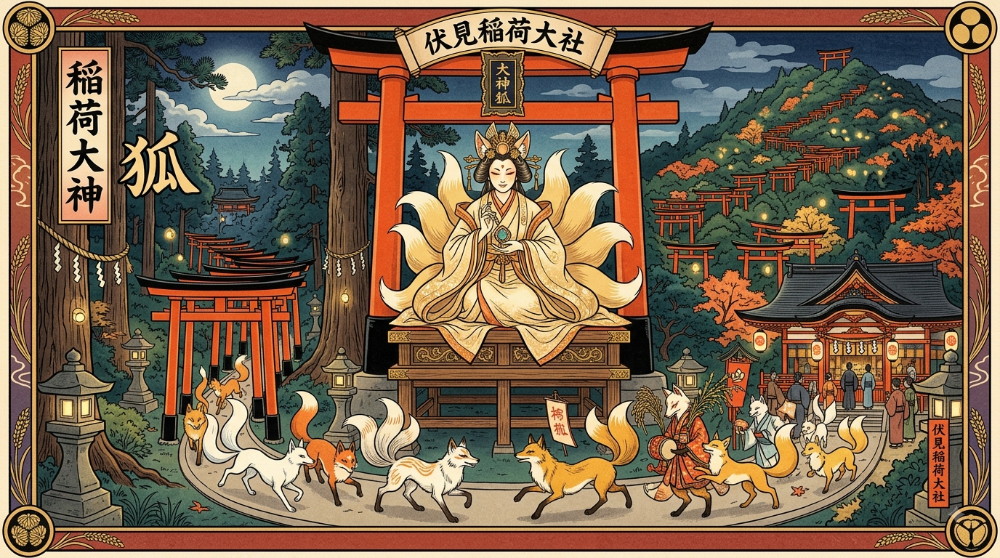

<!DOCTYPE html>
<html lang="pt-br"> </html>
 <head>
    <meta charset="UTF-8">
    <meta name="viewport" content="width=device-width, initial-scale=1.0">
    <title>okami inari e suas Kitsunes</title>
    <style> 
      header{
        background-color: #FFFFFF;
        color: #860404;
        text-align: center;
        max-width: 800px;
        margin: 0 auto;
        border: 5px solid red(255, 170, 0);
        padding: 16px;


      }

     main{
     background-color: #860404 (34, 0 50);
     color: beige(244, 243, 242);
     text-align: center;
        max-width: 800px; 
        margin: 0 auto;
        border: 5px solid rgb(rgb(255, 10, 10), rgb(240, 248, 240), rgb(232, 232, 240));
       padding: 16px;
     }
     img{
       width: 450px;
       height: 320px;


     }

      </style>
       <body>
      </header>
        <h1>O templo de Inari</h1>
        <p>Venham saber tudo sobre a deusa Inari e suas raposas Kitsunes</p>
      </header>
    <main>
     meu primeiro post.</h2>
         <p> sejam bem vindos ao  site templo de inari </p>
    </main>
</body>
<html>


